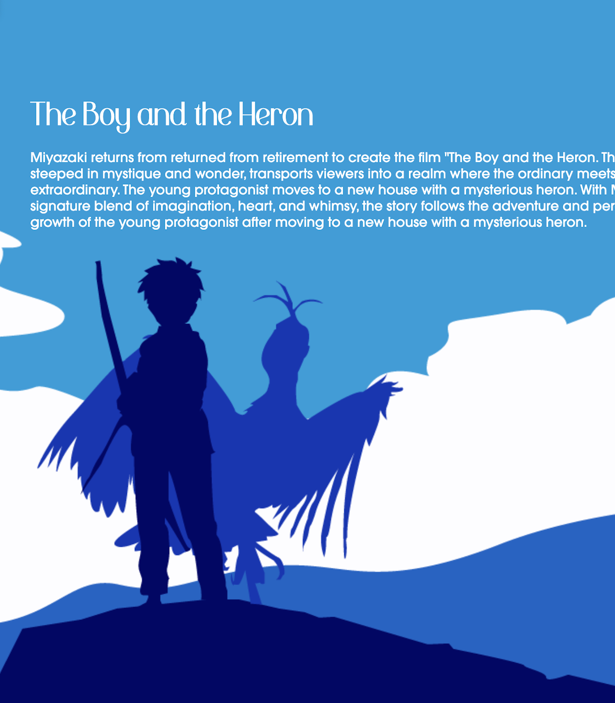
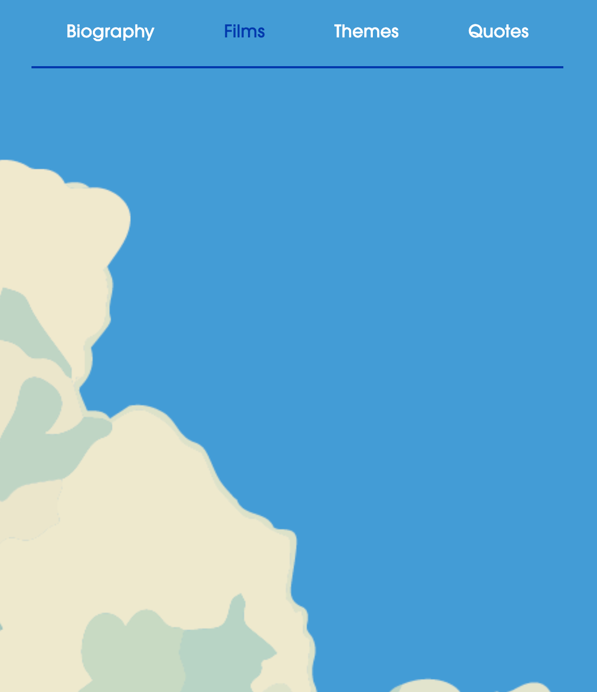

Tools: HTML, CSS, JS Dates: 2024
Website design draft for a Hayao Miyazaki tribute page. Site created as a project for a Web Design Class. For this project I was tasked with designing and developing a website that represents a historical or fictional individual. The design needed to match who this individual is, what they are all about, and how they fit in to greater narratives. Here is the github link. Here is the websites demo link.